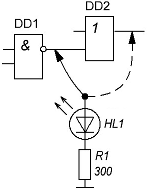
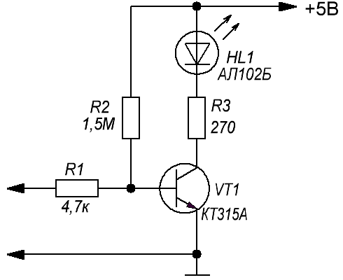
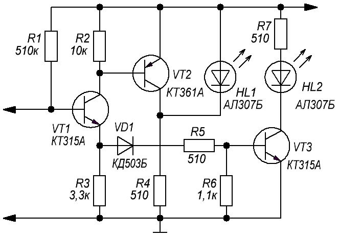
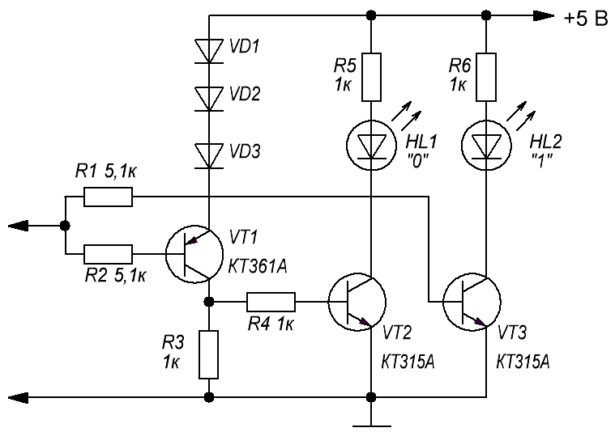
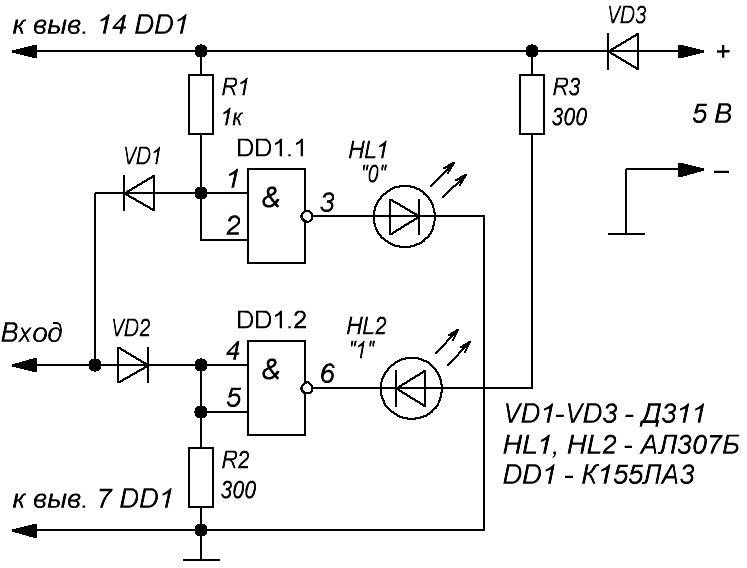
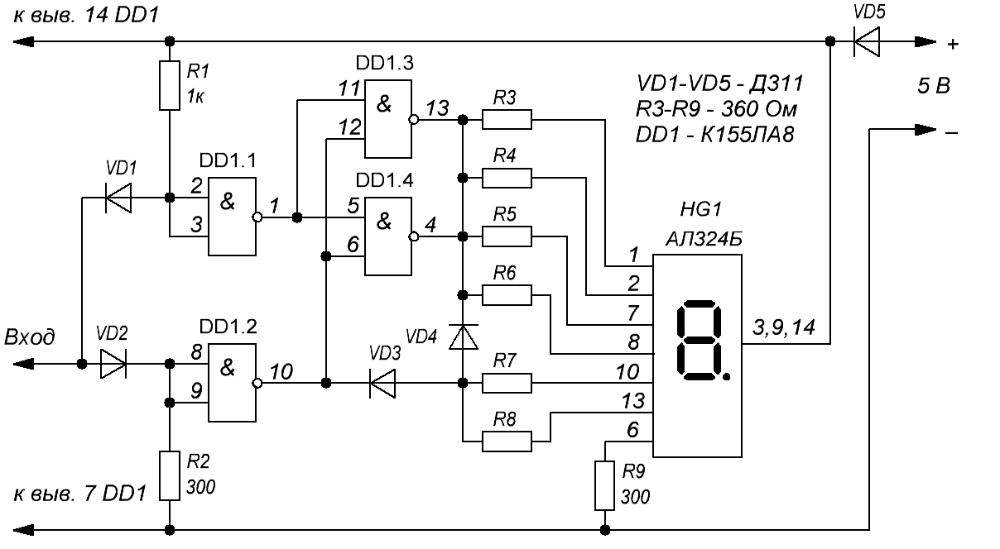

Логические пробники
Состояния на выходах цифровых устройств можно определить с помощью логических пробников.
Простейший пробник состоит из светодиода и резистора (рис. 1). Если при подключении к выходу логического элемента светодиод светится, то на этом выходе напряжение высокого уровня, если же светодиод не светится, то на входе пробника напряжение низкого уровня.

Схема простого и надежного в работе логического пробника приведена на рисунке 2.

Данный пробник позволяет определить состояние логической единицы, логического нуля и отсутствие электрического контакта (высокоимпедансное состояние). Если светодиод HL1 не горит, то это свидетельствует о логическом нуле, если светодиод горит ярко, то это означает логическую единицу. Слабо светящийся светодиод указывает на отсутствие электрического контакта, или на высокоимпедансное состояние выхода логического элемента.
Пробники, принципиальные схемы которых приведены на рисунках 3 и 4, позволяют определять три состояния на выходе логического элемента: логической единицы, логического нуля и высокоимпедансное состояние. В пробниках используются любые кремниевые диоды.


Для обоих устройств светящийся светодиод HL1 указывает на логический нуль, а светящийся HL2 - на логическую единицу. Высокоимпедансное состояние на выходе исследуемого логического элемента, или отсутствие электрического контакта измерительного щупа пробника характеризуется отсутствием свечения обоих светодиодов в схеме рисунка 3 и свечением обоих светодиодов в схеме рисунка 4. В пробнике, схема которого приведена на рисунке 3, подбором сопротивления резистора R1 добиваются, чтобы при отключенном измерительном щупе светодиод HL1 не горел. Подбором сопротивления резистора R5 добиваются необходимого наименьшего значения напряжения логической единицы на входе пробника, при котором горит светодиод HL2.
На рис. 5 представлена схема логического пробника, который индицирует уровни логического 0 и логической 1 зажиганием одного из двух светодиодов.

При отсутствии входного сигнала на выходе логического элемента DD1.1 действует напряжение низкого уровня, а на выходе логического элемента DD1.2 - высокого уровня. Светодиоды HL1 и HL2 не светятся. При подаче на вход напряжения низкого уровня (0 ... 0,4 В) состояние логического элемента DD1.2 не изменяется, а на выходе DD1.1 появляется напряжение высокого уровня (поскольку на входы DD1.1 через открытый диод VD1 подано напряжение низкого уровня). Загорается светодиод HL1, индицируя уровень логического 0. Если же на вход подано напряжение высокого уровня, то через открывшийся диод VD2 это напряжение подается на входы логического элемента DD1.2; на выходе DD1.2 появляется напряжение низкого уровня и загорается светодиод HL2, показывая уровень логической 1. Состояние же элемента DD1.1 при этом не изменяется, светодиод HL1 не горит.

На рис. 6 представлена схема другого логического пробника, аналогичного по принципу работы предыдущему. Отличие состоит в том, что информация о логических уровнях напряжения выводится на светодиодный семисегментный цифровой индикатор. Для управления сегментами в пробник добавлены логические элементы DD1.3, DD1.4 и диоды VD3, VD4. Сегменты, имеющие выводы 10, 13, индицируют логическую 1, а все шесть сегментов - логический 0. Сегмент, имеющий вывод 6, - знак запятой (индикация включения пробника). Логические элементы DD1.3 и DD1.4 включены параллельно для получения суммарного выходного тока, обеспечивающего нормальную работу одновременно шести сегментов.
Для предотвращения подачи на пробники напряжения обратной полярности в их плюсовые шины включены диоды (VD3 на рис. 5 и VD5 на рис. 6).
Микросхему К155ЛА3 можно заменить на К133ЛА3, К158ЛА3, К155ЛА1, К155ЛА4, К555ЛА3. Вместо К155ЛА8 можно применить К133ЛА8, К155ЛА8, но в последнем случае номинал резисторов R3-R8 необходимо увеличить до 820 Ом. Светодиодный индикатор АЛС324Б можно заменить на АЛС312 с любым буквенным индексом, АЛ305А, АЛС321Б, АЛС337Б, АЛС338Б, АЛС324Б. Диоды могут быть любыми из серий Д7, Д9, Д311.
Такие пробники пригодны для работы с микросхемами, рассчитанными на питание от источника напряжением +5 В (серии К155, КР531, К555, К133, К134). Для работ с микросхемами КМОП (серии К164, К176, К561) пробник может быть собран по аналогичной схеме на микросхемах КМОП, но для управления сегментами цифрового индикатора необходимо применить транзисторные ключи.